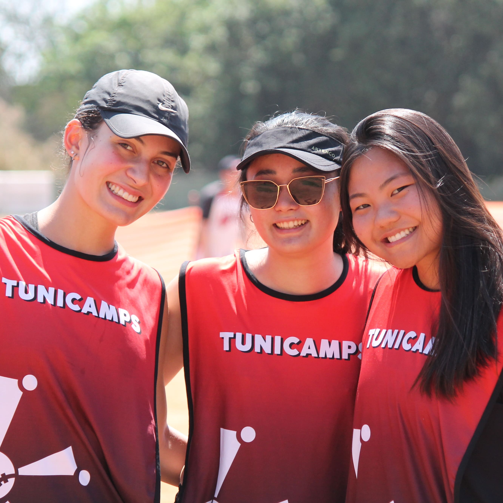
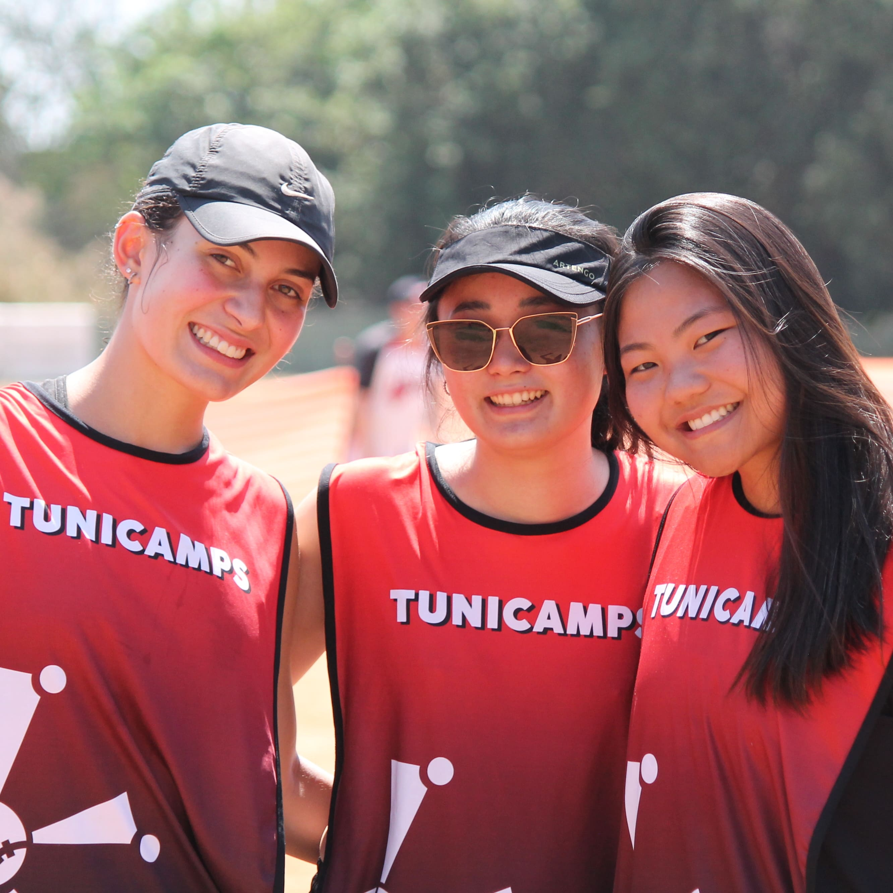

O que é o Tunicamps?
O Tunicamps é um torneio de softbol misto promovido pelos times de Beisebol
e Softbol da Unicamp, que visa aumentar o número de praticantes e difundir essa modalidade no
Brasil.
Quem pode participar do evento?
O evento é aberto para times de categoria livre, reunindo equipes de
diversas localidades. Estima-se a participação de mais de 250 pessoas.
Quando e onde será realizado o Tunicamps 2024?
O torneio será realizado nos dias 28 e 29 de setembro de 2024, no campo de
beisebol e softbol ACA Tozan.
Como minha empresa pode se beneficiar ao patrocinar o Tunicamps?
Patrocinar o Tunicamps proporciona visibilidade positiva, associando sua
marca a valores de responsabilidade social, saúde e educação. Além disso, oferece uma excelente
oportunidade de networking com um público diversificado.
Quais são as opções de patrocínio disponíveis?
As opções de patrocínio incluem: PPatrocínio Ouro,
Patrocínio Prata e Patrocínio Bronze, cada um com diferentes níveis de visibilidade e
benefícios.
Como o patrocínio será utilizado?
Os recursos do patrocínio serão utilizados para cobrir os custos de
organização do evento, incluindo logística, materiais, premiações e infraestrutura, garantindo a
qualidade e sucesso do torneio.
Como posso obter mais informações sobre o evento e as oportunidades de patrocínio?
Para mais informações, entre em contato com a organização do evento pelos
contatos fornecidos seção contato
 
